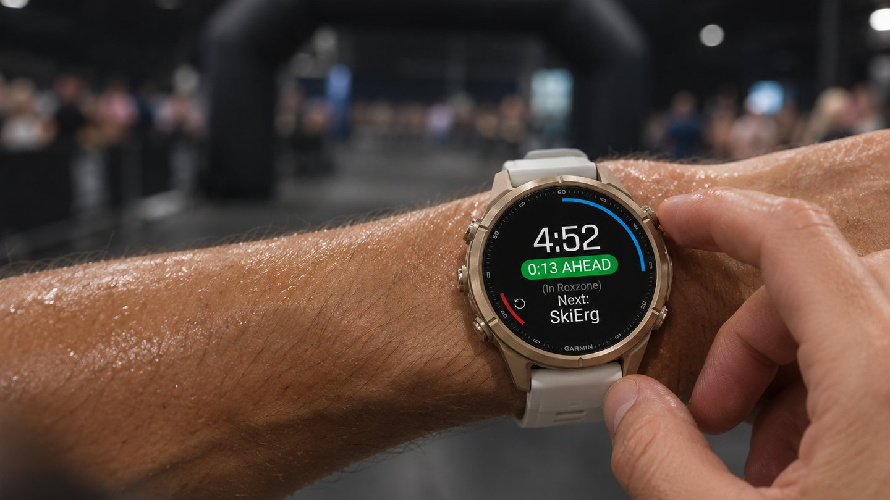
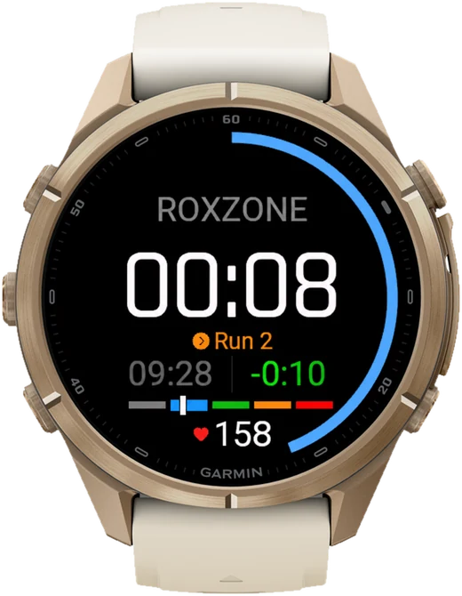
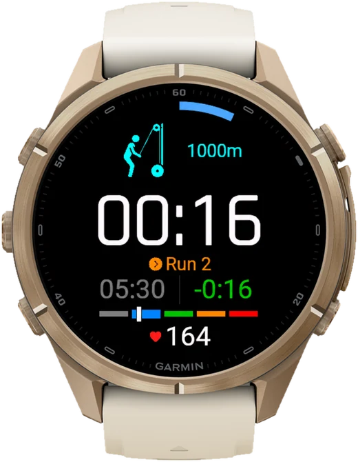
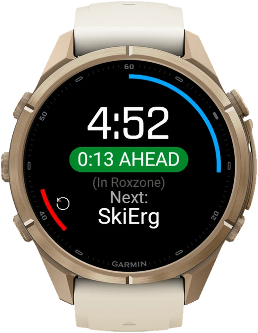
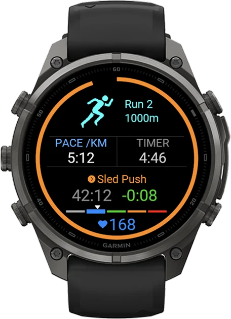
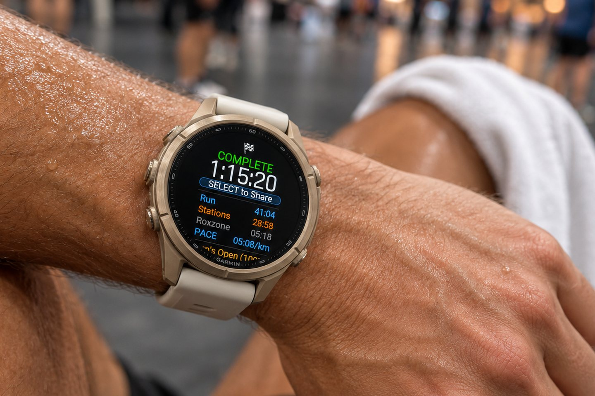
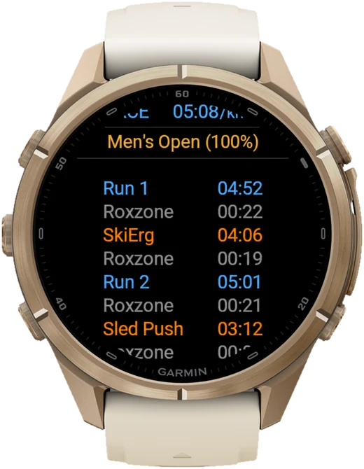
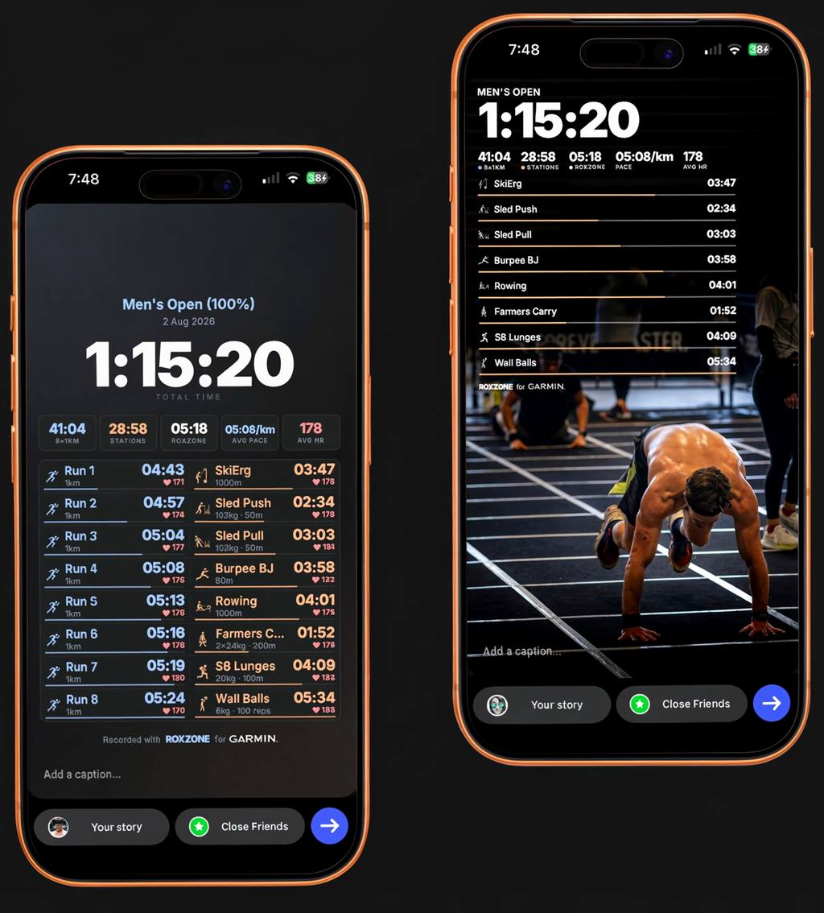

How to use your Garmin on HYROX race day

Somewhere around the second station of a first HYROX race, most people have the same thought: did I press the button back there?
It is a fair worry: sixteen changeovers, heavy breathing at every one, and nobody to remind you. What helps is knowing before the start where you press and what the watch will show.
This post follows one race with ROXZONE, from the evening before to the saved result. Not chosen a setup yet? Start with how to set up your Garmin.
In short
- The warm-up has its own timer and does not count toward your race.
- You press LAP at the arches, which is where your chip is read.
- With a race plan on the watch, you follow one number: ahead or behind.
- A late or missed button press can be fixed after the race.
The evening before
- Put your race plan on the watch. On the watch, open your division under Full Hyrox. On the review screen, open the menu and choose Race Plan. With no menu button, press and hold the screen. If your goal time shows, you are set. No plan yet? The pacing article shows how.
- Decide how you will time the Roxzone. The choices are further down. Whichever you pick, it should be the one you used in your last simulation.
- Turn the touchscreen off. It is in the workout settings, and the buttons keep working.
- Switch Online Results on. It keeps your race at roxzone.app, which is what lets you correct a split afterwards.
- Charge the watch.
Warm up without starting the clock
In the warm-up area, open ROXZONE and go to the review screen. It lists the whole race in order, with your target beside each run and station. Press SELECT and a warm-up timer starts.


The warm-up is saved as its own lap, so it never touches your race time. When your wave goes, press the lap button as you cross the start line. That starts the race clock.
Press LAP at the arches
In a HYROX race, everything is measured at an arch, and your chip is read at each one. Press as you pass underneath and your splits will match your official result.
Every station has four arches: where you leave the running track for the Roxzone, the entrance to the station, the exit from the station, and where you rejoin the running track.
How many of the four you press is up to you:
| Roxzone setting | Press at arch |
|---|---|
| Both switched on | 1234 |
| Rox before only | 123 |
| Rox after only | 234 |
| Both switched off | 23 |
- Both on. Four presses a station. You get the same breakdown as your official result, with every transition as its own split. Practise it before you race it.
- Both off. Two presses a station, one going in and one coming out. Transitions are counted with your runs. This is the easier choice for a first race.
You do not have to count presses. The screen always shows what you are in and what comes next, so one glance tells you where you are.
What the screen shows



One screen carries what you need at a glance. On a run you see your pace, the time for that run and the station you are heading to. The pace works indoors, without GPS.
In the Roxzone the transition gets its own clock. This is how you find out how long you really spend walking to the sled.
During a station you see the time so far and a ring that fills toward your target.
Race Plan
Race to your plan
If you synced a plan, the watch compares your runs and stations with the times you gave it. You see the result in three places:
- The number on the main screen. It shows how far ahead or behind your plan you are across the race so far. Grey means on plan, green ahead, red behind.
- The lap screen. After each press it shows your split and a verdict, such as 0:13 ahead.
- The ring. It fills toward the target for the run or station you are in. It turns orange at 90% and red once you pass the target.


What to do with it in a first race
Being 20 seconds ahead after Run 1 feels like good news. It usually means you started too fast, and the right move is to ease back to the plan's pace before the sleds.
Being behind after the sleds is normal. There is no need to win it all back on the next 1 km run. A few seconds on each run is enough, and the plan already expects your later runs to be slower.
An orange ring means you are close to your target. If the next arch is not in sight yet, you are a little behind on this one. Keep your pace and check the number at the next press.
Build your race planWhen you press at the wrong moment
It happens to everyone, usually somewhere around the burpees. None of it is serious.
- You pressed twice. The lap screen that follows each press has Undo, and the pause menu has Undo Last Lap. Either one puts you back where you were.
- You pressed a few seconds late. Leave it. After the race, open the result at roxzone.app, tap Adjust next to Splits and move the time to the row it belongs to. Your total stays the same.
- You forgot a press. Press when you notice. The screen tells you which run or station the watch thinks you are in, and you can move the time afterwards in the same way.
The finish

Press the lap button when your last wall ball is done. The watch shows your total, with run, station and Roxzone time under it, and below that every split in order.

- BACK saves the race to Garmin Connect as one activity, with every lap named.
- SELECT opens the result on your phone.
After the race: Your result online
If you switched Online Results on the night before, every race and session you finish is saved to your account at roxzone.app by itself. That side of the site is My ROXZONE, and it comes with the app. If you did not, the switch is at the bottom of the watch's main menu.
- The result page. Your total, how it split between running, stations and the Roxzone, your average run pace, and every split by name. It has a short link you can send to anyone.
- Your training at a glance. Home shows this week against last week, the last twelve weeks split into run, station and Roxzone time, your run pace across your last five runs, and your best times for the race and its simulations.
- Every session kept. The watch holds your twenty most recent workouts. Your account keeps all of them, so a simulation from two months ago is still there to compare with.
Share it
Tap Share on the result page and pick a style. Story and Post are finished cards with your time and every split. Stickers are cut-outs, such as your time or split list, to lay over your own race photo.

More on both in the guide: Online Results and sharing your result.
Common questions
When do I press LAP in a HYROX?
At the arches, as you pass underneath. Your timing chip is read at each arch, so pressing there makes your splits match your official result. Press as you cross the start line to start the race clock, and when your last wall ball is done to finish.
What is Roxzone time in HYROX?
The Roxzone is the area between the running track and each station. The time you spend in it counts toward your finish, and your official result lists it separately. The ROXZONE app can time every transition as its own split.
What if I forget to press LAP?
Press when you notice. After the race, open the result at roxzone.app, tap Adjust next to Splits and move the time to the row it belongs to. Your total stays the same.
Does the warm-up count toward my race time?
No. The warm-up has its own timer and is saved as its own lap. The race clock starts when you press the lap button at the start line.
Does the race save to Garmin Connect?
Yes. At the finish, press BACK. The race saves to Garmin Connect as one activity, with every lap named.